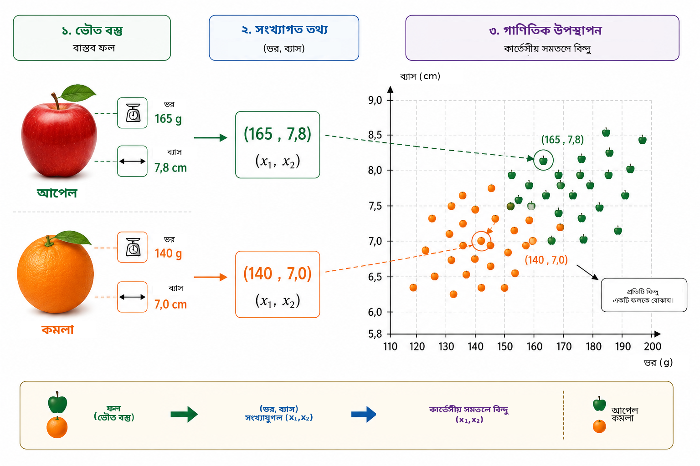
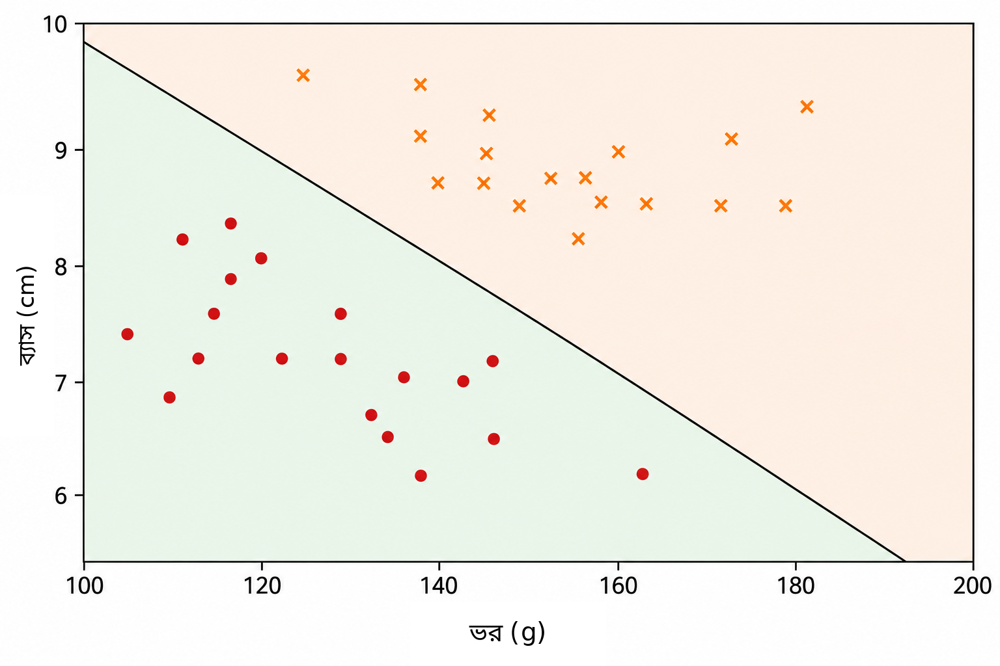
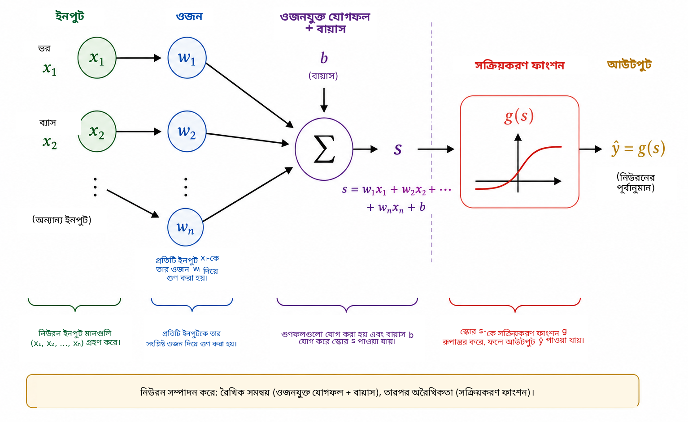
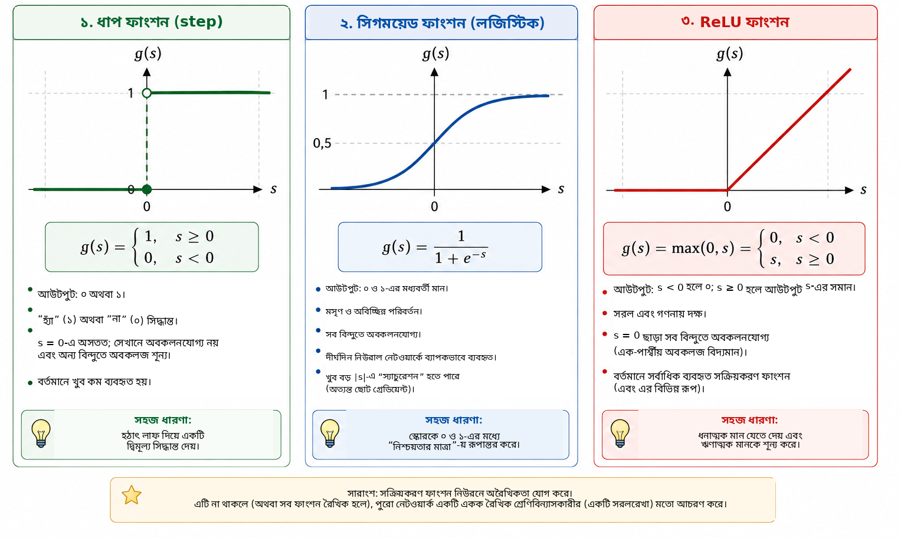
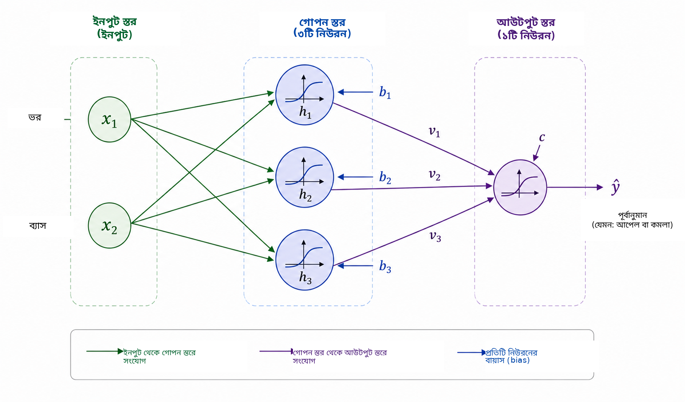
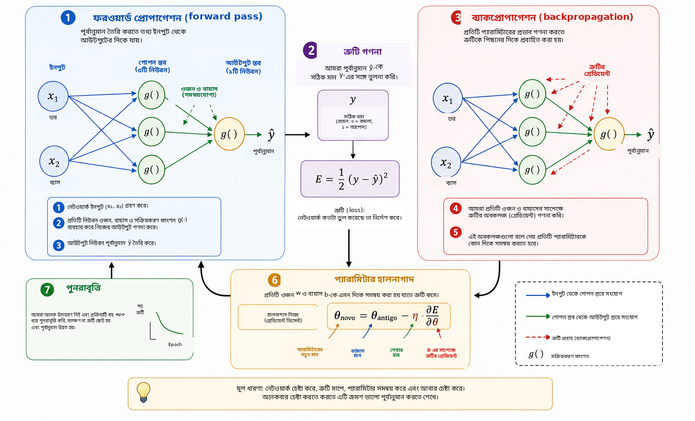
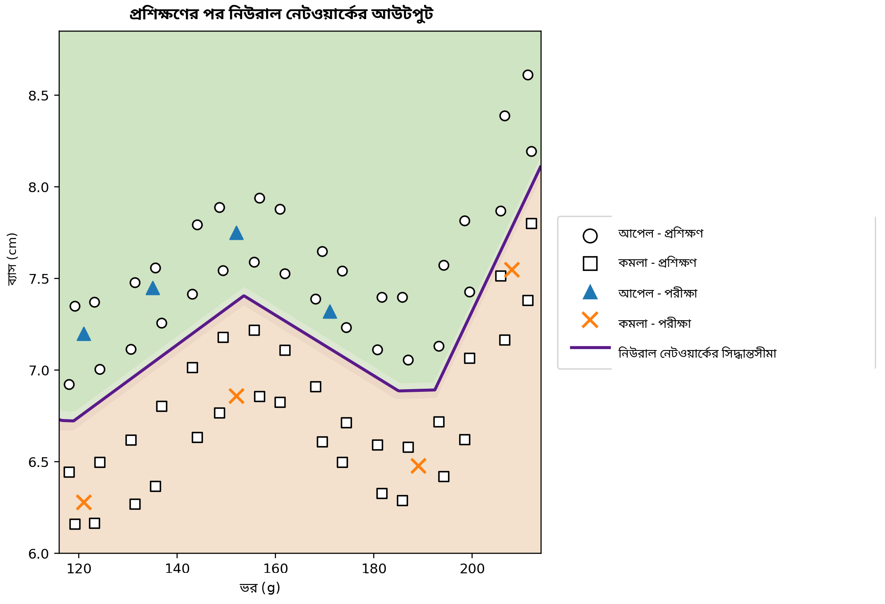

একটি কম্পিউটার কখন শিখতে পারে?
দৈনন্দিন জীবনে আমরা প্রায় অজান্তেই শ্রেণিবিন্যাসের সিদ্ধান্ত নিই। কোনো ফল দেখে দ্রুত বুঝে ফেলি সেটি আপেল নাকি কমলা; ফোনে বার্তা এলে বৈধ কথোপকথন ও অনাকাঙ্ক্ষিত বিজ্ঞাপন আলাদা করি; চিকিৎসাবিষয়ক বিশ্লেষণে একাধিক পরিমাপ একত্র করে সিদ্ধান্তে সহায়তা নেওয়া হয়; আর আর্থিক প্রতিষ্ঠানে ঋণ দেওয়ার আগে বিভিন্ন ধরনের তথ্য মূল্যায়ন করা হয়। এসব ক্ষেত্রেই একটি উত্তর পেতে একাধিক বৈশিষ্ট্যকে একসঙ্গে বিবেচনা করা হয়।
অনেক প্রচলিত কম্পিউটার প্রোগ্রামে এই সিদ্ধান্ত তৈরির নিয়মগুলো প্রোগ্রামার স্পষ্টভাবে লিখে দেন। নিয়ম জানা থাকলে এবং পরিষ্কারভাবে প্রকাশ করা গেলে এই পদ্ধতি ভালো কাজ করে। কিন্তু ডেটা খুব বৈচিত্র্যময় হলে, অথবা ভালো সিদ্ধান্তের জন্য প্রয়োজনীয় সব শর্ত আগে থেকে নির্দিষ্ট করা কঠিন হলে, পদ্ধতিটি সীমাবদ্ধ হয়ে পড়ে। তখন স্বাভাবিক একটি প্রশ্ন উঠে আসে:
আমরা কি এমন একটি প্রোগ্রাম তৈরি করতে পারি, যা সিদ্ধান্তের নিয়ম আগে থেকে না পেয়ে উদাহরণ থেকে নিজেই সেই নিয়ম শিখবে?
এটি মেশিন লার্নিং-এর কেন্দ্রীয় ধারণাগুলোর একটি। মেশিন লার্নিং হলো কৃত্রিম বুদ্ধিমত্তার সেই ক্ষেত্র যেখানে ডেটা থেকে মডেলের প্যারামিটার নির্ধারণের পদ্ধতি অধ্যয়ন করা হয় । সুপারভাইজড লার্নিং সমস্যায় অ্যালগরিদমকে সঠিক উত্তরসহ উদাহরণ দেওয়া হয়, এবং লক্ষ্য থাকে এমন একটি মডেল পাওয়া যা প্রশিক্ষণে না দেখা উদাহরণেও কার্যকর পূর্বানুমান দিতে পারে। এই উদ্দেশ্যে তৈরি বহু মডেলের মধ্যে কৃত্রিম নিউরাল নেটওয়ার্ক ছবি শনাক্তকরণ, ভাষা প্রক্রিয়াকরণ, সংকেত বিশ্লেষণ এবং টাইম সিরিজ পূর্বানুমানের মতো কাজে বিশেষ গুরুত্ব পেয়েছে ।
গণিত, গণনা এবং বিদ্যালয় শিক্ষার মধ্যে সেতু হিসেবে নিউরাল নেটওয়ার্কের ব্যবহার নিয়ে Professor de Matemática Online-এ Batista এবং Martins ইতিমধ্যে আলোচনা করেছেন। তাঁরা শিক্ষকশিক্ষা, Python এবং অঙ্ক শনাক্তকরণকে যুক্ত করে একটি কার্যক্রম উপস্থাপন করেন। বর্তমান প্রবন্ধটি একটি পরিপূরক পথ অনুসরণ করে। আমাদের মূল লক্ষ্য একটি ছোট নিউরাল নেটওয়ার্কের অভ্যন্তরীণ গাণিতিক কাঠামো স্পষ্ট করা: বিশ্লেষণাত্মক জ্যামিতি থেকে শুরু করে ধাপে ধাপে গ্রেডিয়েন্ট গণনা এবং ব্যাকপ্রোপাগেশনের সরাসরি বাস্তবায়ন পর্যন্ত পৌঁছানো।
আধুনিক প্রয়োগের জটিলতা সত্ত্বেও, নিউরাল নেটওয়ার্কের গাণিতিক মূল তুলনামূলকভাবে পরিচিত ধারণার সাহায্যে বোঝানো যায়। মৌলিকভাবে, নিউরাল নেটওয়ার্ক হলো কয়েকটি ফাংশনের সমন্বয়, যার প্যারামিটার ডেটা থেকে সমন্বয় করা হয়। আমরা একটি সরল জ্যামিতিক সমস্যা দিয়ে শুরু করব, একটি বিভাজক সরলরেখাকে কৃত্রিম নিউরন হিসেবে পুনর্ব্যাখ্যা করব, কয়েকটি নিউরন সংযুক্ত করব, সক্রিয়করণ ফাংশনের ভূমিকা বুঝব এবং দেখব কীভাবে অবকলজ ব্যবহার করে নেটওয়ার্কের প্যারামিটার স্বয়ংক্রিয়ভাবে সমন্বয় করা যায়। শেষে Python-এ একটি সম্পূর্ণ ছোট উদাহরণ বাস্তবায়ন করব, যাতে সমীকরণ ও কোডের মধ্যে সরাসরি সম্পর্ক বজায় থাকে।
সমস্যাটির গাণিতিক উপস্থাপন
নিউরাল নেটওয়ার্ক কীভাবে কাজ করে তা বোঝার জন্য আমরা ইচ্ছাকৃতভাবে একটি সহজ সমস্যা দিয়ে শুরু করি: আপেল ও কমলা আলাদা করা। কোনো ফলে রং, ভর, ব্যাস, গঠন এবং গন্ধের মতো বহু বৈশিষ্ট্য থাকতে পারে, যেগুলো এই কাজে সহায়ক হতে পারে। কিন্তু প্রাথমিক গাণিতিক মডেলে সব জটিলতা অন্তর্ভুক্ত করার প্রয়োজন নেই। আমরা কেবল দুটি সহজে পরিমাপযোগ্য রাশি ব্যবহার করব: গ্রামে ভর এবং সেন্টিমিটারে ব্যাস।
অতএব প্রতিটি ফলকে একটি সুশৃঙ্খল যুগল দ্বারা উপস্থাপন করা হবে \[(x_1,x_2),\] যেখানে \[x_1=\text{{ভর}} \qquad\text{{এবং}}\qquad x_2=\text{{ব্যাস}}.\]
তাই \((155,\;7.2)\) যুগলটি এমন একটি ফলকে বোঝায় যার ভর \(155\) g এবং ব্যাস \(7.2\) cm। ভৌত বস্তুটিকে দুটি সংখ্যাগত পরিমাপে রূপান্তর করলে প্রতিটি ফল কার্তেসীয় সমতলের একটি বিন্দুর সঙ্গে যুক্ত হয়: প্রথম স্থানাঙ্ক তার ভর এবং দ্বিতীয়টি তার ব্যাস নির্দেশ করে। চিত্র 1-এ আপেল ও কমলার একটি কাল্পনিক সেটের জন্য এই উপস্থাপন দেখানো হয়েছে।

এই রূপান্তর সমস্যাটিকে দেখার পদ্ধতিই বদলে দেয়। সরাসরি “কীভাবে আপেল বা কমলা চিনব” প্রশ্নটির বদলে আমরা একটি জ্যামিতিক প্রশ্ন করি: সমতলে দুই শ্রেণির বিন্দুগুলোকে কীভাবে আলাদা করা যায়? মেশিন লার্নিংয়ে এই দৃষ্টিভঙ্গির পরিবর্তন অত্যন্ত গুরুত্বপূর্ণ। ছবি, লেখা, শব্দ এবং পরীক্ষণমূলক সংকেত — সবকিছুকেই অ্যালগরিদমে দেওয়ার আগে সংখ্যাগত উপস্থাপনে রূপান্তর করতে হয়। আমাদের উদাহরণে প্রতিটি বস্তুর মাত্র দুটি স্থানাঙ্ক আছে; বাস্তব প্রয়োগে একটি উপস্থাপনে শত, সহস্র বা এমনকি লক্ষাধিক উপাদান থাকতে পারে। নীতিটি একই: প্রতিটি উদাহরণকে কিছু সংখ্যার সঙ্গে যুক্ত করা হয় এবং মডেল এমন একটি নিয়ম খোঁজে যা সেই উপস্থাপনকে কাঙ্ক্ষিত উত্তরে রূপান্তর করে।
আমরা সবচেয়ে সহজ জ্যামিতিক নিয়ম দিয়ে শুরু করি এবং প্রশ্ন করি: একটি মাত্র সরলরেখা কি আপেলের বিন্দুগুলোকে কমলার বিন্দু থেকে যথেষ্ট ভালোভাবে আলাদা করতে পারে?
শ্রেণিবিন্যাসকারী হিসেবে একটি সরলরেখা
প্রতিটি ফলকে কার্তেসীয় সমতলে একটি বিন্দু হিসেবে উপস্থাপন করার পর শ্রেণিবিন্যাস একটি জ্যামিতিক সমস্যায় পরিণত হয়: একটি সরলরেখা কি আপেলকে কমলা থেকে আলাদা করতে পারে? এই প্রশ্নটি মেশিন লার্নিংয়ের একটি গুরুত্বপূর্ণ পরিবার, রৈখিক শ্রেণিবিন্যাসকারী, সম্পর্কে মৌলিক ধারণা দেয়।
চিত্র 2-এর মতো ডেটার মেঘের মধ্যে দিয়ে একটি সরলরেখা কল্পনা করি। রেখাটি সমতলকে দুটি অর্ধসমতলে ভাগ করে। যদি অধিকাংশ আপেলের বিন্দু এক পাশে এবং অধিকাংশ কমলার বিন্দু অন্য পাশে থাকে, তবে নতুন কোনো ফলের অবস্থানকে শ্রেণিবিন্যাসের নিয়ম হিসেবে ব্যবহার করা যায়। তার ভর ও ব্যাস মেপে আমরা ফলটিকে একটি বিন্দু হিসেবে উপস্থাপন করি এবং দেখি বিন্দুটি রেখার কোন পাশে আছে।

কার্তেসীয় সমতল \((x_1,x_2)\)-এ একটি সরলরেখা লেখা যায় \[w_1x_1+w_2x_2+b=0, \qquad (w_1,w_2)\neq(0,0).\]
ভেক্টর \((w_1,w_2)\) রেখাটির লম্ব এবং তাই তার অভিমুখ নির্ধারণ করে, আর প্যারামিটার \(b\) তার অবস্থানে অবদান রাখে। এই উপস্থাপনে সামান্য অতিরিক্ততা আছে: \(w_1\), \(w_2\) এবং \(b\)-কে একই অশূন্য ধ্রুবক দিয়ে গুণ করলে একই রেখাই পাওয়া যায়। ফলে সীমার প্যারামিটারগুলো অনন্য নয়। এদের সংখ্যাগত ব্যাখ্যা চলকগুলোর স্কেলের উপরও নির্ভর করে। ভর গ্রামে এবং ব্যাস সেন্টিমিটারে মাপা হয় বলে এককের পার্থক্য বিবেচনা না করে \(w_1\) ও \(w_2\)-এর মান সরাসরি তুলনা করা উচিত নয়।
রেখার সমীকরণ নিজেই একটি বিন্দু সীমার কোন পাশে আছে তা নির্ধারণের সহজ উপায় দেয়। স্কোর সংজ্ঞায়িত করি \[s(x_1,x_2)=w_1x_1+w_2x_2+b.\]
যদি \(s(x_1,x_2)=0\), তবে বিন্দুটি রেখার উপর। যদি \(s(x_1,x_2)>0\), তবে এটি এক অর্ধসমতলে; আর যদি \(s(x_1,x_2)<0\), তবে অন্য অর্ধসমতলে। ধরি ধনাত্মক স্কোর আপেল এবং ঋণাত্মক স্কোর কমলাকে নির্দেশ করে। তাহলে নিয়মটি হবে \[\begin{cases} s(x_1,x_2)\geq 0 & \Longrightarrow \text{{আপেল}},\\ s(x_1,x_2)<0 & \Longrightarrow \text{{কমলা}}. \end{cases}\]
উদাহরণ হিসেবে ধরি সীমাটি নির্ধারিত হয়েছে \[w_1=\frac{1}{10}, \qquad w_2=2, \qquad b=-30.\] ভর \(160\) g এবং ব্যাস \(7.8\) cm এমন একটি ফলের জন্য \[\begin{aligned} s &=\frac{1}{10}\times160+2\times7.8-30\\ &=16+15.6-30\\ &=1.6. \end{aligned}\] স্কোর ধনাত্মক, তাই বিন্দুটি সেই অর্ধসমতলে রয়েছে যেটিকে আমরা আপেলের সঙ্গে যুক্ত করেছি। এই শ্রেণিবিন্যাসকারী ফলটিকে আপেল হিসেবে শনাক্ত করবে।
\(w_1\), \(w_2\) এবং \(b\)-এর প্রতিটি নির্বাচন ভালো শ্রেণিবিন্যাস দেয় না। কিছু রেখা দুই দলকে খারাপভাবে আলাদা করে, অন্যগুলো কম ভুল করে। শেখার সমস্যাটি হলো লেবেলযুক্ত পূর্ববর্তী উদাহরণ ব্যবহার করে এমন প্যারামিটার নির্ধারণ করা যা মডেলের ত্রুটির কোনো পরিমাপ কমায়। রেখাটির অবস্থান সরাসরি প্রোগ্রাম না করে আমরা চাই অ্যালগরিদম ডেটা থেকে তার সহগগুলো সমন্বয় করুক।
শ্রেণিগুলো আনুমানিকভাবে রৈখিকভাবে পৃথকযোগ্য হলে একটি রেখাই যথেষ্ট ভালো কাজ করতে পারে। আরও জটিল ডেটাসেটে অরৈখিক সিদ্ধান্তসীমা প্রয়োজন হতে পারে। সেই সীমাবদ্ধতা নিয়ে আলোচনার আগে আমরা সদ্য তৈরি শ্রেণিবিন্যাসকারীকে একটি প্রাথমিক গণনামূলক একক হিসেবে পুনর্ব্যাখ্যা করি: একটি কৃত্রিম নিউরন।
কৃত্রিম নিউরন
আগের অংশে \[s=w_1x_1+w_2x_2+b\] রাশিটি ব্যবহার করে নির্ধারণ করা হয়েছিল একটি ফল রেখার কোন পাশে আছে। একই রাশিকে কৃত্রিম নিউরন-এর গণনার প্রথম ধাপ হিসেবে দেখা যায়। একটি নিউরন সংখ্যাগত ইনপুট গ্রহণ করে, ওজন ও বায়াস ব্যবহার করে সেগুলোকে একত্র করে এবং পরে একটি গাণিতিক ফাংশন প্রয়োগ করে আউটপুট তৈরি করে।
আমাদের উদাহরণে ইনপুট হলো ভর \(x_1\) এবং ব্যাস \(x_2\)। প্রতিটি ইনপুটকে ওজন নামের একটি প্যারামিটার দিয়ে গুণ করা হয়; গুণফলগুলো \(b\) নামের একটি ধ্রুবক পদ, অর্থাৎ বায়াস,-এর সঙ্গে যোগ করা হয়। চিত্র 3-এ এই গণনাটি পরিকল্পিতভাবে দেখানো হয়েছে।

ওজনগুলো নির্ধারণ করে ইনপুটের পরিবর্তন স্কোরকে কীভাবে প্রভাবিত করবে। \(x_2\) এবং অন্য সব রাশি স্থির রেখে \(x_1\)-এ \(\Delta x_1\) পরিবর্তন করলে \(s\) পরিবর্তিত হয় \(w_1\Delta x_1\) পরিমাণে। একইভাবে \(x_2\)-এ \(\Delta x_2\) পরিবর্তন স্কোরকে \(w_2\Delta x_2\) পরিমাণে বদলে দেয়। চিহ্নও গুরুত্বপূর্ণ: ধনাত্মক ওজনের ক্ষেত্রে ইনপুট বাড়লে স্কোর বাড়ে, আর ঋণাত্মক ওজনে বিপরীত প্রভাব হয়। ভিন্ন ভিন্ন চলকের একক ও স্কেল আলাদা হলে এই ব্যাখ্যা সতর্কতার সঙ্গে ব্যবহার করতে হয়। এজন্য বাস্তব বাস্তবায়নে প্রশিক্ষণের আগে ইনপুট ডেটা প্রায়ই নরমালাইজ বা স্ট্যান্ডার্ডাইজ করা হয়।
বায়াস \(b\) হলো অ্যাফাইন রূপান্তরের ধ্রুবক পদ। জ্যামিতিকভাবে এটি সিদ্ধান্তসীমাকে সরাতে দেয়। যদি \(b=0\) হয়, তবে \[w_1x_1+w_2x_2=0\] রেখাটিকে উৎসবিন্দুর মধ্য দিয়ে যেতে বাধ্য করে। বায়াস থাকলে সীমাটি অন্য স্থানে সরতে পারে। সমতুল্যভাবে, \(x_1=x_2=0\) হলে স্কোর কেবল \(s=b\)।
স্কোরই নিউরনের চূড়ান্ত আউটপুট হওয়া জরুরি নয়। সাধারণভাবে এর উপর একটি সক্রিয়করণ ফাংশন \(g\) প্রয়োগ করা হয়: \[\widehat{y}=g(s)=g\left(w_1x_1+w_2x_2+b\right).\] অতএব গণনাটি দুই ধাপে হয়, \[\begin{aligned} s &= w_1x_1+w_2x_2+b,\\[4pt] \widehat{y} &= g(s). \end{aligned}\]
আগের অংশের প্যারামিটার ব্যবহার করলে \(s=1.6\)। যদি আমরা ধাপ ফাংশন \[g(s)= \begin{cases} 1, & s\geq0,\\ 0, & s<0, \end{cases}\] নির্বাচন করি, তবে \(\widehat{y}=g(1.6)=1\)। আমাদের নিয়ম অনুযায়ী ফলটি আপেল হিসেবে শ্রেণিবদ্ধ হবে। এই সক্রিয়করণে \(s\) শূন্য অতিক্রম করলেই সিদ্ধান্ত বদলে যায়, তাই শ্রেণিসীমা ঠিক \[w_1x_1+w_2x_2+b=0.\]
একটি নিউরন তাই সমন্বয়যোগ্য প্যারামিটারসহ একটি সহজ গাণিতিক বস্তু। এর প্রকৃত গুরুত্ব আসে অনেকগুলো এমন একককে যুক্ত করার মাধ্যমে। তবে নেটওয়ার্ক গঠনের আগে বোঝা দরকার সক্রিয়করণ ফাংশন কেন অপরিহার্য।
সক্রিয়করণ ফাংশন কেন দরকার?
একটি নিউরন প্রথমে অ্যাফাইন রূপান্তর ব্যবহার করে একটি স্কোর গণনা করে এবং তারপর একটি সক্রিয়করণ ফাংশন প্রয়োগ করে। নিউরাল নেটওয়ার্ককে জটিল সম্পর্ক উপস্থাপন করতে হলে এই দ্বিতীয় ধাপটি অপরিহার্য। কারণটি বোঝার জন্য এমন একটি নেটওয়ার্ক কল্পনা করি যেখানে কোনো সক্রিয়করণ ফাংশন নেই। প্রতিটি একক তখন হবে \[y=w_1x_1+w_2x_2+b.\]
এক-মাত্রিক উদাহরণে ধরি প্রথম একক তৈরি করে \[h=ax+b\] এবং দ্বিতীয়টি গণনা করে \[y=ch+d.\] প্রতিস্থাপন করলে \[y=c(ax+b)+d=acx+(cb+d),\] যা এখনও \(x\)-এর একটি অ্যাফাইন ফাংশন। একাধিক মাত্রাতেও একই কথা সত্য: অ্যাফাইন রূপান্তরের সমন্বয় আবারও অ্যাফাইন। ফলে অরৈখিক কোনো ক্রিয়া ছাড়া অনেক স্তর যোগ করলেও নেটওয়ার্ক মৌলিকভাবে বেশি প্রকাশক্ষম হয় না; পুরো সমন্বয়কে একটি মাত্র অ্যাফাইন রূপান্তর দিয়ে প্রতিস্থাপন করা সম্ভব।
সক্রিয়করণ ফাংশন এই সীমাবদ্ধতা ভাঙে। স্কোর \(s\) গণনার পর নিউরন সাধারণত একটি অরৈখিক ম্যাপ প্রয়োগ করে \[h=g(s).\] এমন বহু একক সংযুক্ত হলে ফলিত সমন্বয়কে আর একটি মাত্র অ্যাফাইন রূপান্তরে নামিয়ে আনা যায় না। এর ফলে নেটওয়ার্ক আরও জটিল সিদ্ধান্তসীমা তৈরি করতে পারে।
সবচেয়ে সহজ সক্রিয়করণ হলো ধাপ ফাংশন, \[g(s)= \begin{cases} 1, & s\geq0,\\ 0, & s<0. \end{cases}\] এটি দ্বিমূল্য সিদ্ধান্ত দেয় এবং শ্রেণিবিন্যাস বোঝাতে খুব উপযোগী। কিন্তু \(s\neq0\) হলে এর অবকলজ শূন্য এবং \(s=0\)-এ অবকলজ সংজ্ঞায়িত নয়। গ্রেডিয়েন্ট-ভিত্তিক প্রশিক্ষণে প্যারামিটার কীভাবে বদলানো উচিত তা নির্ধারণ করতে অবকলজ ব্যবহৃত হয়, তাই এই প্রশিক্ষণ পদ্ধতির জন্য ধাপ ফাংশন উপযুক্ত নয়।
একটি বিকল্প হলো সিগময়েড ফাংশন, \[\sigma(s)=\frac{1}{1+e^{-s}}.\] এটি প্রতিটি বাস্তব সংখ্যাকে \(0\) ও \(1\)-এর মাঝের মানে রূপান্তর করে। খুব ঋণাত্মক \(s\)-এ আউটপুট \(0\)-এর দিকে যায়; খুব ধনাত্মক \(s\)-এ \(1\)-এর দিকে যায়; আর মাঝামাঝি অঞ্চলে পরিবর্তনটি মসৃণ। সিগময়েড সর্বত্র অবকলনযোগ্য এবং \[\sigma'(s)=\sigma(s)\bigl(1-\sigma(s)\bigr).\] এর আউটপুট \(0\) ও \(1\)-এর মধ্যে হওয়ায় দ্বিমূল্য শ্রেণিবিন্যাসকারীর আউটপুট স্তরে এটি প্রায়ই ব্যবহৃত হয়। উপযুক্ত লস ফাংশনসহ একটি সম্ভাবনামূলক মডেলে আউটপুটকে \(1\)-দ্বারা নির্দেশিত শ্রেণির সম্ভাবনার আনুমানিক মান হিসেবে ব্যাখ্যা করা যায়। তবে গোপন স্তরে সিগময়েডের একটি অসুবিধা রয়েছে: বড় পরম মানের ইনপুটে এর অবকলজ খুব ছোট হয়ে যায়, যা গভীর নেটওয়ার্কে ভ্যানিশিং গ্রেডিয়েন্ট সমস্যায় অবদান রাখে।
গোপন স্তরে বহুল ব্যবহৃত সক্রিয়করণ হলো ReLU (Rectified Linear Unit), \[\mathrm{ReLU}(s)=\mathrm{max}(0,s) = \begin{cases} 0, & s<0,\\ s, & s\geq0. \end{cases}\] দুটি রৈখিক অংশ দিয়ে গঠিত হলেও ReLU সামগ্রিকভাবে রৈখিক নয়। \(s<0\) হলে এর অবকলজ \(0\) এবং \(s>0\) হলে \(1\)। \(s=0\)-এ প্রচলিত অর্থে অবকলজ নেই, এবং সফটওয়্যার বাস্তবায়নে গ্রেডিয়েন্টের জন্য একটি প্রচলিত মান বেছে নেওয়া হয়। ধনাত্মক ইনপুটে \(s\) বড় হলেও অবকলজ ছোট হয়ে যায় না, ফলে সিগময়েডের একটি স্যাচুরেশন সমস্যা এড়ানো যায়।
চিত্র 4-এ এই তিনটি সক্রিয়করণ তুলনা করা হয়েছে: ধাপ ফাংশনের হঠাৎ লাফ, সিগময়েডের মসৃণ পরিবর্তন এবং ReLU-এর ঢাল পরিবর্তন।

তাদের প্রধান বৈশিষ্ট্যগুলো নিচে সংক্ষেপে দেওয়া হলো।
| ফাংশন | আউটপুট | অবকলজ | সাধারণ ব্যবহার |
|---|---|---|---|
| ধাপ | \(\{0,1\}\) | \(s\neq0\) হলে শূন্য; \(s=0\)-এ সংজ্ঞায়িত নয় | ঐতিহাসিক মডেল ও শিক্ষামূলক উদাহরণ |
| সিগময়েড | \((0,1)\) | প্রতিটি \(s\)-এর জন্য বিদ্যমান | দ্বিমূল্য শ্রেণিবিন্যাসের আউটপুট স্তর |
| ReLU | \([0,\infty)\) | \(s<0\) হলে \(0\) এবং \(s>0\) হলে \(1\) | গোপন স্তর |
এই ফাংশনগুলোর বিস্তারিত বৈশিষ্ট্য আলাদা হলেও তাদের সাধারণ ধারণাগত ভূমিকা হলো অরৈখিকতা প্রবর্তন করা। এই অরৈখিকতাই পরবর্তী অংশের ছোট নেটওয়ার্ককে এমন সম্পর্ক উপস্থাপন করতে দেয় যা একটি মাত্র সরলরেখা দিয়ে সম্ভব নয়।
আরও পড়তে আগ্রহী পাঠকের জন্য Haykin নিউরাল নেটওয়ার্কের একটি ধ্রুপদি উপস্থাপন দেন; Goodfellow, Bengio এবং Courville সক্রিয়করণ ফাংশন ও গভীর নেটওয়ার্কের প্রশিক্ষণকে বিস্তৃত প্রেক্ষাপটে আলোচনা করেন। Nielsen-এর উন্মুক্ত বই নিউরন, সক্রিয়করণ এবং শেখা সম্পর্কে অন্তর্দৃষ্টি তৈরির জন্য বিশেষভাবে সহজলভ্য।
একটি ছোট নিউরাল নেটওয়ার্ক গঠন
এখন আমরা দুটি ইনপুট, তিনটি নিউরনবিশিষ্ট একটি গোপন স্তর এবং একটি আউটপুট নিউরন নিয়ে একটি নেটওয়ার্ক বিবেচনা করি। ইনপুটগুলো আগের মতোই \[x_1=\text{{ভর}}, \qquad x_2=\text{{ব্যাস}},\] এবং চিত্র 5-এর মতো এগুলো প্রত্যেক গোপন নিউরনে সরবরাহ করা হয়।

গোপন স্তরের আউটপুটগুলো \(h_1\), \(h_2\) এবং \(h_3\) হোক। প্রতিটি নিউরন একই দুটি ইনপুট পায়, কিন্তু তার নিজস্ব ওজন ও বায়াস থাকে: \[\begin{aligned} h_1&=g\left(w_{11}x_1+w_{12}x_2+b_1\right),\\[4pt] h_2&=g\left(w_{21}x_1+w_{22}x_2+b_2\right),\\[4pt] h_3&=g\left(w_{31}x_1+w_{32}x_2+b_3\right). \end{aligned}\]
তিনটি নিউরনই একই ভর ও ব্যাস পেলেও তাদের প্যারামিটার আলাদা বলে আউটপুট ভিন্ন হতে পারে। প্রশিক্ষণের সময় এই প্যারামিটারগুলো এমনভাবে সমন্বয় করা হয় যাতে মধ্যবর্তী সক্রিয়করণগুলো শ্রেণিবিন্যাসে কার্যকর হয়।
এরপর \(h_1\), \(h_2\) এবং \(h_3\) আউটপুট নিউরনে যায়, যা গণনা করে \[s_{\mathrm{out}}=v_1h_1+v_2h_2+v_3h_3+c\] এবং উৎপন্ন করে \[\widehat{y}=g_{\mathrm{out}}\left(s_{\mathrm{out}}\right).\] আমাদের দ্বিমূল্য সমস্যার জন্য আউটপুটে সিগময়েড ব্যবহার করি: \[\widehat{y}=\sigma\left(v_1h_1+v_2h_2+v_3h_3+c\right), \qquad 0<\widehat{y}<1.\]
আপেলের জন্য \(y=1\) এবং কমলার জন্য \(y=0\) নিলে \(0.5\) সীমা থেকে শ্রেণির সিদ্ধান্ত হয় \[\widehat{y}\geq0.5 \Longrightarrow \text{{আপেল}}, \qquad \widehat{y}<0.5 \Longrightarrow \text{{কমলা}}.\] অতএব \(1\)-এর কাছাকাছি মান আপেলের সঙ্গে এবং \(0\)-এর কাছাকাছি মান কমলার সঙ্গে দৃঢ়ভাবে যুক্ত। আগে যেমন বলা হয়েছে, \(\widehat{y}\)-কে সরাসরি সম্ভাবনা হিসেবে ব্যাখ্যা করতে হলে মডেল ও প্রশিক্ষণ সম্পর্কে অতিরিক্ত অনুমান প্রয়োজন। এখানে ব্যবহৃত শ্রেণিবিন্যাসের জন্য \(\widehat{y}\)-কে নেটওয়ার্কের একটি ধারাবাহিক আউটপুট হিসেবে দেখাই যথেষ্ট।
এই স্থাপত্যের কেন্দ্রীয় বৈশিষ্ট্য হলো মধ্যবর্তী উপস্থাপন \[(x_1,x_2) \longrightarrow (h_1,h_2,h_3) \longrightarrow \widehat{y}.\] নেটওয়ার্ক দুটি বৈশিষ্ট্য গ্রহণ করে এবং চূড়ান্ত উত্তর দেওয়ার আগে তিনটি নতুন রাশি তৈরি করে। এই সক্রিয়করণগুলো হাতে বেছে নেওয়া নয়: এগুলো ওজন ও বায়াসের উপর নির্ভর করে এবং প্রশিক্ষণের সঙ্গে সঙ্গে বদলে যায়।
ছোট হলেও নেটওয়ার্কটিতে ইতিমধ্যেই তেরোটি সমন্বয়যোগ্য প্যারামিটার আছে। তিনটি গোপন নিউরনে রয়েছে \[3(2+1)=9\] টি প্যারামিটার এবং আউটপুট নিউরন যোগ করে \[3+1=4.\] অতএব \[9+4=13.\]
ম্যাট্রিক্স নোটেশনে একই গণনা আরও পরিষ্কার। সংজ্ঞায়িত করি \[\mathbf{x}= \begin{bmatrix} x_1\\x_2 \end{bmatrix}, \qquad W^{(1)}= \begin{bmatrix} w_{11}&w_{12}\\ w_{21}&w_{22}\\ w_{31}&w_{32} \end{bmatrix}, \qquad \mathbf{b}^{(1)}= \begin{bmatrix} b_1\\b_2\\b_3 \end{bmatrix}.\] তখন গোপন স্তরকে লেখা যায় \[\mathbf{h}=g\left(W^{(1)}\mathbf{x}+\mathbf{b}^{(1)}\right),\] যেখানে \(g\) প্রতিটি উপাদানের উপর আলাদাভাবে কাজ করে। আউটপুটের জন্য \[\widehat{y} = \sigma\left(W^{(2)}\mathbf{h}+b^{(2)}\right),\] যেখানে \[W^{(2)}= \begin{bmatrix} v_1&v_2&v_3 \end{bmatrix}.\]
এই নোটেশনটি Python প্রোগ্রামে যে কাঠামো দেখা যাবে তার পূর্বাভাস দেয়। কোনো ফল ইনপুটে দেওয়ার পর ধারাবাহিক সক্রিয়করণ গণনা করে \(\widehat{y}\) পাওয়ার প্রক্রিয়াকে ফরওয়ার্ড প্রোপাগেশন বা forward pass বলা হয়। এখন মূল প্রশ্ন: তেরোটি প্যারামিটার কীভাবে স্বয়ংক্রিয়ভাবে নির্ধারণ করা যায় যাতে পূর্বানুমানগুলো ডেটার সঙ্গে ভালোভাবে মিলে?
নিউরাল নেটওয়ার্ক কীভাবে শেখে?
ওজন ও বায়াস আগে থেকে জানা থাকে না। সঠিক উত্তর জানা এমন উদাহরণ ব্যবহার করে এগুলো সমন্বয় করতে হয়। এই প্রক্রিয়াকে প্রশিক্ষণ বলা হয় এবং সংক্ষেপে লেখা যায় \[\boxed{\text{{পূর্বানুমান}}} \longrightarrow \boxed{\text{{ত্রুটি মাপা}}} \longrightarrow \boxed{\text{{প্যারামিটার সমন্বয়}}} \longrightarrow \boxed{\text{{পুনরাবৃত্তি}}}.\]
ভর \(140\) g এবং ব্যাস \(7.0\) cm এমন একটি ফল বিবেচনা করি যার সঠিক শ্রেণি কমলা, অর্থাৎ \(y=0\)। ধরি প্রশিক্ষণের কোনো পর্যায়ে নেটওয়ার্ক \(\widehat{y}=0.80\) দেয়। পূর্বানুমান ও লক্ষ্যমানের পার্থক্যের একটি সহজ পরিমাপ হলো বর্গ ত্রুটি \[E=\frac{1}{2}\left(y-\widehat{y}\right)^2.\] এই উদাহরণে \[E=\frac{1}{2}(0-0.80)^2=0.32.\]
এই রাশিটি একটি উদাহরণের জন্য লস ফাংশন। বর্গ হওয়ায় \(E\geq0\), এবং লক্ষ্য থেকে দূরের পূর্বানুমান বেশি শাস্তি পায়। \(1/2\) গুণকটি ন্যূনতমের অবস্থান বদলায় না, কিন্তু অবকলজ সহজ করে। দ্বিমূল্য শ্রেণিবিন্যাসে অন্যান্য লসও ব্যবহৃত হয়, বিশেষ করে ক্রস-এন্ট্রপি। এখানে বর্গ ত্রুটি ব্যবহার করছি কারণ এর বীজগণিত স্বচ্ছ এবং অপ্টিমাইজেশন ও ব্যাকপ্রোপাগেশন পরিচয় করানোর জন্য যথেষ্ট ।
প্রশিক্ষণ সেটে \(N\)টি উদাহরণ থাকলে একটি সামগ্রিক পরিমাপ হলো গড় লস \[J=\frac{1}{N}\sum_{i=1}^{N}E_i.\] প্রতিটি পূর্বানুমান নেটওয়ার্কের ওজন ও বায়াসের উপর নির্ভর করে, তাই \(J\)-ও সব প্যারামিটারের উপর নির্ভরশীল। প্রশিক্ষণ মানে এমন প্যারামিটার খোঁজা যাতে \(J\) ছোট হয়।
সমন্বয়ের প্রক্রিয়া বোঝার জন্য প্রথমে ধরি একটি মাত্র ওজন \(w\) ছাড়া অন্য সব প্যারামিটার স্থির। তখন লসকে \(J=J(w)\) হিসেবে দেখা যায়। চিত্র 6-এ প্রশিক্ষণের মৌলিক ধাপগুলো সংক্ষেপে দেখানো হয়েছে।

যেসব পাঠকের ক্যালকুলাসের অভিজ্ঞতা কম, তাদের জন্য অবকলজকে এখানে স্থানীয় সংবেদনশীলতা হিসেবে বোঝা যায়: কোনো প্যারামিটারে ছোট পরিবর্তন করলে লস কীভাবে বদলাতে পারে তা এটি জানায়। এর চিহ্ন বলে কোন দিকটিতে ফাংশন স্থানীয়ভাবে বাড়ে বা কমে, আর পরম মান পরিবর্তনের স্থানীয় শক্তি নির্দেশ করে।
অবকলজ \[\frac{\partial J}{\partial w}\] স্থানীয় ঢাল দেয়। এটি ধনাত্মক হলে \(w\) সামান্য বাড়ালে \(J\) সাধারণত বাড়ে, তাই ওজনকে বিপরীত দিকে সরানো উচিত। এটি ঋণাত্মক হলে \(w\) বাড়ানো স্থানীয়ভাবে \(J\) কমাতে পারে। দুই ক্ষেত্রই লেখা যায় \[w_{\mathrm{new}} = w_{\mathrm{old}} - \eta\frac{\partial J}{\partial w},\] যা গ্রেডিয়েন্ট ডিসেন্ট-এর মৌলিক ধারণা। ধনাত্মক সংখ্যা \(\eta\) হলো শেখার হার; এটি পদক্ষেপের আকার নিয়ন্ত্রণ করে। খুব ছোট মান প্রশিক্ষণ ধীর করতে পারে, আর খুব বড় মান দোলন বা অস্থিতিশীলতা ঘটাতে পারে।
অনেক প্যারামিটারের নেটওয়ার্কে \(\theta\)-কে যেকোনো ওজন বা বায়াস ধরি। হালনাগাদ হয় \[\theta_{\mathrm{new}} = \theta_{\mathrm{old}} - \eta\frac{\partial J}{\partial\theta}.\] সব আংশিক অবকলজের সমষ্টিই লসের গ্রেডিয়েন্ট। জ্যামিতিকভাবে গ্রেডিয়েন্ট স্থানীয়ভাবে দ্রুততম বৃদ্ধির দিক নির্দেশ করে, তাই ঋণাত্মক গ্রেডিয়েন্ট হ্রাসের একটি স্থানীয় দিক দেয়।
নেটওয়ার্ক যখন কয়েকটি ফাংশনের সমন্বয়, তখন এসব অবকলজ কীভাবে গণনা করব সেটিই বাকি। ফরওয়ার্ড পাসে তথ্য প্রবাহিত হয় \[\text{{ইনপুট}} \longrightarrow \text{{গোপন স্তর}} \longrightarrow \text{{আউটপুট}}.\] প্রথম দিকের কোনো প্যারামিটার লসকে কীভাবে প্রভাবিত করে তা জানতে আমরা নির্ভরতার শৃঙ্খলকে গাণিতিকভাবে উল্টো দিকে অনুসরণ করি। এই পদ্ধতিকে ব্যাকপ্রোপাগেশন বলা হয়। মূলত এটি চেইন রুলের একটি নিয়মিত ও দক্ষ প্রয়োগ। গোপন স্তরসহ নেটওয়ার্কে এই পদ্ধতির জনপ্রিয়করণের ধ্রুপদি রেফারেন্স Rumelhart, Hinton এবং Williams ; Nielsen একটি বিশদ ও বিশেষভাবে শিক্ষামূলক ব্যাখ্যা দিয়েছেন।
একটি সরল নির্ভরতা-শৃঙ্খলে যেখানে \(E\) নির্ভর করে \(\widehat{y}\)-এর উপর, \(\widehat{y}\) নির্ভর করে সক্রিয়করণ \(h\)-এর উপর, এবং \(h\) নির্ভর করে ওজন \(w\)-এর উপর, চেইন রুল দেয় \[\frac{\partial E}{\partial w} = \frac{\partial E}{\partial\widehat{y}} \, \frac{\partial\widehat{y}}{\partial h} \, \frac{\partial h}{\partial w}.\] প্রতিটি গুণক \(w\) কীভাবে চূড়ান্ত লসকে প্রভাবিত করে তার একটি ধাপ বর্ণনা করে। বড় নেটওয়ার্কে এমন বহু শৃঙ্খল থাকে, এবং ব্যাকপ্রোপাগেশন গণনাটিকে এমনভাবে সংগঠিত করে যাতে মধ্যবর্তী অবকলজগুলো পুনর্ব্যবহার করা যায়, প্রতিটি প্যারামিটারের জন্য আলাদা করে আবার গণনা করতে না হয়।
বাস্তবে প্রশিক্ষণে অনেক উদাহরণ ব্যবহৃত হয়। প্রশিক্ষণ সেটের উপর একবার সম্পূর্ণ চলাকে একটি epoch বলা হয়। এই প্রবন্ধের শিক্ষামূলক প্রোগ্রামের মতো প্রতিটি উদাহরণের পর প্যারামিটার হালনাগাদ করা যায়, অথবা বড় নেটওয়ার্কে প্রচলিত ছোট ছোট উদাহরণগুচ্ছ, অর্থাৎ mini-batch,-এর পর হালনাগাদ করা যায়। উভয় ক্ষেত্রেই পূর্বানুমান, লস, গ্রেডিয়েন্ট এবং হালনাগাদের চক্র বহু epoch ধরে পুনরাবৃত্তি হয়।
এই পরিবর্তনকে দৃশ্যমান করার একটি উপায় হলো প্রশিক্ষণের বিভিন্ন পর্যায়ে একই নির্দিষ্ট উদাহরণের পূর্বানুমান অনুসরণ করা। ভর \(140\) g এবং ব্যাস \(7.0\) cm সেই ফলটিকেই আবার বিবেচনা করি, যার সঠিক শ্রেণি কমলা। সারণি 1-এ একটি কাল্পনিক অগ্রগতি দেখানো হয়েছে। মানগুলো কোনো নির্দিষ্ট চালনার ফল নয়; কেবল প্রক্রিয়াটি বোঝাতে ব্যবহৃত।
| Epoch | পূর্বানুমান \(\widehat{y}\) | লস \(E\) | শ্রেণিবিন্যাস |
|---|---|---|---|
| 1 | 0.86 | 0.37 | আপেল |
| 5 | 0.71 | 0.25 | আপেল |
| 10 | 0.55 | 0.15 | আপেল |
| 20 | 0.31 | 0.05 | কমলা |
| 40 | 0.09 | 0.004 | কমলা |
শুরুতে আউটপুট \(1\)-এর কাছাকাছি এবং ফলটি ভুলভাবে আপেল হিসেবে শ্রেণিবদ্ধ হয়। প্যারামিটার সমন্বয়ের সঙ্গে পূর্বানুমান কমে এবং একসময় \(0.5\) সীমা অতিক্রম করে, ফলে সঠিক শ্রেণি পাওয়া যায়। এই প্রক্রিয়ায় বদলায় ওজন ও বায়াসের সংখ্যাগত মান; নেটওয়ার্কের স্থাপত্য অপরিবর্তিত থাকে।
প্রশিক্ষণ ডেটায় লস কমানোই চূড়ান্ত লক্ষ্য নয়। একটি কার্যকর নেটওয়ার্ককে এমন উদাহরণেও ভালো পূর্বানুমান দিতে হবে যেগুলো প্যারামিটার নির্ধারণে ব্যবহার করা হয়নি। এই ক্ষমতাকে জেনারালাইজেশন বলা হয়। কোনো মডেল যদি প্রশিক্ষণ সেটের বিশেষ বৈশিষ্ট্যের সঙ্গে অতিরিক্তভাবে খাপ খেয়ে নতুন ডেটায় খারাপ কাজ করে, তাকে ওভারফিটিং বলা হয়। আরও সতর্ক মূল্যায়নে ডেটাকে সাধারণত প্রশিক্ষণ, ভ্যালিডেশন এবং টেস্ট সেটে ভাগ করা হয়: প্রথমটি প্যারামিটার নির্ধারণ করে, দ্বিতীয়টি মডেল উন্নয়নের সময় সিদ্ধান্ত নিতে সহায়তা করে, এবং তৃতীয়টি চূড়ান্ত মূল্যায়নের জন্য সংরক্ষিত থাকে। জেনারালাইজেশন ও মডেল মূল্যায়ন নিয়ে বিস্তৃত আলোচনা Faceli et al. এবং Goodfellow, Bengio ও Courville -এ পাওয়া যায়।
এখন আমরা নিউরাল নেটওয়ার্কে শেখার গাণিতিক অর্থে পৌঁছেছি। এই প্রেক্ষিতে শেখা মানে হলো একটি যৌগিক ফাংশনের প্যারামিটার এমনভাবে সমন্বয় করা যাতে ডেটার উপর ত্রুটির একটি পরিমাপ কমে এবং, আদর্শভাবে, নতুন উদাহরণে ভালোভাবে সাধারণীকরণ করা যায়। নেটওয়ার্ক পূর্বানুমান করে, লস গণনা করে, অবকলজ ব্যবহার করে বোঝে প্যারামিটারগুলো সেই লসকে কীভাবে প্রভাবিত করে, এবং ধারাবাহিকভাবে ছোট সংশোধন করে।
গণিত থেকে Python
এখন আমরা সমীকরণ থেকে একটি চলমান প্রোগ্রামে যাই। উদ্দেশ্য কোনো বিশেষায়িত নিউরাল-নেটওয়ার্ক লাইব্রেরি ব্যবহার করা নয়; বরং NumPy দিয়ে সরাসরি এই প্রবন্ধে তৈরি গাণিতিক ক্রিয়াগুলো বাস্তবায়ন করা । এতে লাইন ধরে দেখা যায় কীভাবে রৈখিক সমন্বয়, সক্রিয়করণ ফাংশন, লস গণনা, ব্যাকপ্রোপাগেশন এবং গ্রেডিয়েন্ট ডিসেন্ট কোডে উপস্থিত হয়।
আরও বিশ্বাসযোগ্য চূড়ান্ত উদাহরণের জন্য আমরা বিস্তৃত ভর–ব্যাস অঞ্চলে ছড়ানো একটি কৃত্রিম ডেটাসেট ব্যবহার করি। এখনও কেবল দুটি ভৌত বৈশিষ্ট্য — গ্রামে ভর এবং সেন্টিমিটারে ব্যাস — ব্যবহার করা হচ্ছে, তবে এখন সমতলের বড় অঞ্চলে \(64\)টি প্রশিক্ষণ উদাহরণ ছড়িয়ে দেওয়া হয়েছে এবং আটটি অতিরিক্ত উদাহরণ একটি শিক্ষামূলক পরীক্ষার জন্য আলাদা রাখা হয়েছে। ডেটা কৃত্রিম হলেও আপেল ও কমলার যুক্তিযুক্ত পরিসরের মধ্যে রাখা হয়েছে। উদ্দেশ্য হলো কয়েকটি অতিরিক্তভাবে কৃত্রিম ক্লাস্টারে সব বিন্দু জমা না করে একটি অরৈখিক সিদ্ধান্তসীমা তৈরি করা।
জ্যামিতিক ধারণাটি সহজ। ভর–ব্যাস সমতলে একটি রেফারেন্স বক্ররেখা নির্ধারণ করি, তার উপরে দুটি ব্যান্ডে আপেল এবং নিচে দুটি ব্যান্ডে কমলা রাখি। ভর ও ব্যাস উভয়েই ছোট নির্ধারিত বিচ্যুতি যোগ করা হয় যাতে পর্যবেক্ষণগুলো বৃহত্তর অঞ্চলে ছড়ায়। ফলে আগের চিত্রগুলোর তুলনায় উদাহরণটি সমৃদ্ধ: বেশি বিন্দু আছে, ডেটা পুরো অঞ্চলে ছড়ানো এবং উপযুক্ত সিদ্ধান্তসীমা স্পষ্টভাবে একটি সরলরেখার চেয়ে বেশি বক্র।
এই চূড়ান্ত গণনামূলক পরীক্ষায় আমরা গোপন স্তরকে বারোটি ReLU নিউরনে প্রসারিত করি। এতে আগের অংশগুলোর ধারণাগত কাঠামো বদলায় না; শুধু আরও জটিল সীমা উপস্থাপনের ক্ষমতা বাড়ে। তিন-নিউরনের শিক্ষামূলক নেটওয়ার্কের \(13\) প্যারামিটারের বদলে এখন \(49\)টি সমন্বয়যোগ্য প্যারামিটার: প্রথম স্তরে \(24\)টি ওজন ও \(12\)টি বায়াস, তারপর আউটপুট স্তরে \(12\)টি ওজন ও একটি বায়াস। সমীকরণের রূপ একই থাকে; শুধু ভেক্টর ও ম্যাট্রিক্স বড় হয়।
সম্পূর্ণ প্রোগ্রামটি নিচে দেওয়া হলো।
import numpy as np
import matplotlib.pyplot as plt
from matplotlib.lines import Line2D
def relu(s):
return np.maximum(0, s)
def relu_derivative(s):
return (s > 0).astype(float)
def sigmoid(s):
return 1 / (1 + np.exp(-s))
def base_boundary(m):
return 6.68 + 0.74*np.exp(-((m-155)/20)**2) \
+ 1.50/(1 + np.exp(-(m-202)/5))
def build_data():
masses_1 = np.linspace(118, 212, 16)
masses_2 = masses_1 + np.array([
1.2,-1.1,0.8,-1.3,1.0,-0.8,1.1,-1.0,
1.3,-0.9,0.9,-1.2,1.0,-1.0,0.8,-0.7
])
k = np.arange(16)
a1 = np.column_stack([
masses_1,
base_boundary(masses_1) + 0.22 + 0.05*np.sin(0.8*k)
])
a2 = np.column_stack([
masses_2,
base_boundary(masses_2) + 0.58 + 0.06*np.cos(0.45*k)
])
o1 = np.column_stack([
masses_1,
base_boundary(masses_1) - (0.22 + 0.04*np.cos(0.7*k))
])
o2 = np.column_stack([
masses_2,
base_boundary(masses_2) - (0.55 + 0.05*np.sin(0.5*k))
])
X_train = np.vstack([a1, a2, o1, o2])
y_train = np.array([1.0]*32 + [0.0]*32)
X_test = np.array([
[121.0, 7.20], [135.0, 7.45],
[152.0, 7.75], [171.0, 7.32],
[121.0, 6.28], [152.0, 6.86],
[189.0, 6.48], [208.0, 7.55]
])
y_test = np.array([1,1,1,1,0,0,0,0], dtype=float)
return X_train, y_train, X_test, y_test
def predict(X, mean, std, W1, b1, W2, b2):
Xn = (X - mean) / std
outputs = []
for x in Xn:
h = relu(W1 @ x + b1)
y_hat = sigmoid(W2 @ h + b2)
outputs.append(y_hat)
return np.array(outputs)
X_train, y_train, X_test, y_test = build_data()
mean = X_train.mean(axis=0)
std = X_train.std(axis=0)
Xn = (X_train - mean) / std
rng = np.random.default_rng(42)
W1 = 0.1 * rng.standard_normal((12, 2))
b1 = np.zeros(12)
W2 = 0.1 * rng.standard_normal(12)
b2 = 0.0
eta = 0.05
n_epochs = 6000
history = []
for epoch in range(n_epochs):
for i in rng.permutation(len(Xn)):
x = Xn[i]
target = y_train[i]
z1 = W1 @ x + b1
h = relu(z1)
z2 = W2 @ h + b2
y_hat = sigmoid(z2)
delta2 = (y_hat - target) * y_hat * (1 - y_hat)
dW2 = delta2 * h
db2 = delta2
delta1 = (delta2 * W2) * relu_derivative(z1)
dW1 = np.outer(delta1, x)
db1 = delta1
W1 -= eta * dW1
b1 -= eta * db1
W2 -= eta * dW2
b2 -= eta * db2
errors = []
for x, target in zip(Xn, y_train):
h = relu(W1 @ x + b1)
y_hat = sigmoid(W2 @ h + b2)
errors.append(0.5 * (target - y_hat)**2)
history.append(np.mean(errors))
def make_figure():
masses = np.linspace(116, 214, 500)
diameters = np.linspace(6.0, 8.85, 500)
M, D = np.meshgrid(masses, diameters)
grid = np.column_stack([M.ravel(), D.ravel()])
P = predict(grid, mean, std, W1, b1, W2, b2).reshape(M.shape)
fig, ax = plt.subplots(figsize=(9.2, 6.3))
ax.contourf(
M, D, P,
levels=[0.0, 0.25, 0.50, 0.75, 1.0],
colors=["#f3e0cb", "#ecd5c4", "#dbe7cf", "#cde3bf"],
alpha=0.95
)
ax.contour(M, D, P, levels=[0.5],
colors=["#5a1a8a"], linewidths=2.2)
mask = y_train == 1.0
ax.scatter(X_train[mask,0], X_train[mask,1], marker="o",
s=48, facecolors="white", edgecolors="black",
linewidths=1.1, label="Apple - training")
mask = y_train == 0.0
ax.scatter(X_train[mask,0], X_train[mask,1], marker="s",
s=48, facecolors="white", edgecolors="black",
linewidths=1.1, label="Orange - training")
mask = y_test == 1.0
ax.scatter(X_test[mask,0], X_test[mask,1], marker="^",
s=92, color="#1f77b4", label="Apple - test")
mask = y_test == 0.0
ax.scatter(X_test[mask,0], X_test[mask,1], marker="x",
s=110, color="#ff7f0e", linewidths=2.0,
label="Orange - test")
ax.set_xlabel("Mass (g)")
ax.set_ylabel("Diameter (cm)")
ax.set_title("Neural-network output after training")
handles = [
Line2D([0],[0], marker='o', markersize=9,
markerfacecolor='white', markeredgecolor='black',
linestyle='None', label='Apple - training'),
Line2D([0],[0], marker='s', markersize=9,
markerfacecolor='white', markeredgecolor='black',
linestyle='None', label='Orange - training'),
Line2D([0],[0], marker='^', markersize=9, color='#1f77b4',
linestyle='None', label='Apple - test'),
Line2D([0],[0], marker='x', markersize=10, color='#ff7f0e',
linestyle='None', label='Orange - test'),
Line2D([0],[0], color='#5a1a8a', lw=2.2,
label='Neural-network decision boundary')
]
ax.legend(handles=handles, loc='center left',
bbox_to_anchor=(1.02, 0.5), frameon=True)
fig.tight_layout()
plt.show()যদিও কোডটি প্রবন্ধের প্রথম দিকের সমীকরণগুলোর তুলনায় দীর্ঘ, এর কাঠামো স্বচ্ছই থাকে। build_data() ফাংশনটি স্বয়ংক্রিয়ভাবে \(64\)টি প্রশিক্ষণ উদাহরণ এবং আটটি শিক্ষামূলক পরীক্ষা উদাহরণ তৈরি করে। এরপর আমরা দুই চলককে স্ট্যান্ডার্ডাইজ করি \[x_j^{\ast}=\frac{x_j-\mu_j}{\sigma_j},\] যেখানে \(\mu_j\) এবং \(\sigma_j\) কেবল প্রশিক্ষণ সেট থেকে গণনা করা হয়। এতে টেস্ট সেট প্যারামিটার নির্ধারণে প্রভাব ফেলতে পারে না এবং ভর ও ব্যাসকে তুলনীয় সংখ্যাগত স্কেলে আনা যায়।
ফরওয়ার্ড পাসের মূল ধারণা বদলায় না। পার্থক্য শুধু এই যে প্রথম স্তর এখন বারোটি গোপন সক্রিয়করণের একটি ভেক্টর তৈরি করে। ম্যাট্রিক্স নোটেশনে, \[\mathbf{z}^{(1)}=W^{(1)}\mathbf{x}+\mathbf{b}^{(1)}, \qquad \mathbf{h}=\mathrm{ReLU}(\mathbf{z}^{(1)}),\] \[z^{(2)}=W^{(2)}\mathbf{h}+b^{(2)}, \qquad \widehat{y}=\sigma(z^{(2)}).\] এই চারটি লাইনেই অ্যালগরিদমের গাণিতিক মূল নিহিত। প্রশিক্ষণও আগের যুক্তি অনুসরণ করে: পূর্বানুমান গণনা করা, তার ত্রুটি মাপা, অবকলজ ব্যবহার করে সংবেদনশীলতার তথ্য পিছনের দিকে প্রবাহিত করা এবং ছোট গ্রেডিয়েন্ট-ডিসেন্ট পদক্ষেপে প্যারামিটার হালনাগাদ করা।
কোডে আউটপুট স্তরের ব্যাকপ্রোপাগেশন দেখা যায়
delta2 = (y_hat - target) * y_hat * (1 - y_hat)এবং গোপন স্তরে প্রবাহ দেখা যায়
delta1 = (delta2 * W2) * relu_derivative(z1)এরপর সব ওজন ও বায়াস হালনাগাদ করা হয়। প্রতিটি epoch-এ উদাহরণগুলোর ক্রম এলোমেলো করা হয় এবং প্রতিটি পর্যবেক্ষণের পর প্যারামিটার বদলানো হয় বলে এই বাস্তবায়ন স্টোকাস্টিক গ্রেডিয়েন্ট ডিসেন্ট-এর একটি প্রাথমিক রূপ।
এখানে ব্যবহৃত র্যান্ডম সিড ও হাইপারপ্যারামিটারের ক্ষেত্রে চূড়ান্ত গড় লস সাধারণত \(10^{-5}\) থেকে \(10^{-4}\) মাত্রার এবং \(64\)টি প্রশিক্ষণ উদাহরণসহ আটটি শিক্ষামূলক টেস্ট উদাহরণ প্রত্যাশিত শ্রেণি পায়। এটিকে কঠোর পরিসংখ্যানিক কর্মদক্ষতার মূল্যায়ন হিসেবে ব্যাখ্যা করা উচিত নয়: ডেটা কৃত্রিম এবং শিক্ষামূলক উদ্দেশ্যে তৈরি। এর কাজ হলো তুলনামূলকভাবে কম সরল একটি প্রেক্ষাপটে দেখানো যে ছোট নিউরাল নেটওয়ার্ক স্পষ্টভাবে অরৈখিক সিদ্ধান্তসীমা শিখতে পারে।
চিত্র 7-এ ভর–ব্যাস সমতলে প্রোগ্রামের চূড়ান্ত আউটপুট দেখানো হয়েছে। সব প্রশিক্ষণ বিন্দু দৃশ্যমান। গাঢ় বক্ররেখাটি \(\widehat{y}=0.5\) স্তর এবং নেটওয়ার্ক শেখা সিদ্ধান্তসীমা নির্দেশ করে; ছায়াযুক্ত অঞ্চলগুলো দুইটি পূর্বানুমিত শ্রেণি দেখায়। বৃত্ত প্রশিক্ষণ আপেল, বর্গ প্রশিক্ষণ কমলা, ত্রিভুজ টেস্ট আপেল এবং ক্রস টেস্ট কমলা নির্দেশ করে। কোনো ডেটা বিন্দু ঢাকা না পড়ার জন্য লেজেন্ডটি মূল প্লটের বাইরে রাখা হয়েছে।

আমরা দুইটি সরল বিন্দুগুচ্ছকে একটি সরলরেখা দিয়ে আলাদা করা থেকে শুরু করেছিলাম এবং শেষ করেছি আরও সমৃদ্ধ একটি গণনামূলক উদাহরণে, যেখানে নেটওয়ার্কের প্যারামিটার স্বয়ংক্রিয়ভাবে সমন্বিত হয়ে একটি বক্র সিদ্ধান্তসীমা তৈরি হয়েছে। গণিতে রহস্যময় কিছু যোগ করা হয়নি: বাস্তবায়নটি কেবল বৃহত্তর স্কেলে এবং উচ্চ গতিতে অ্যাফাইন সমন্বয়, সক্রিয়করণ ফাংশন, অবকলজ, ম্যাট্রিক্স গুণ এবং গ্রেডিয়েন্ট-ডিসেন্ট হালনাগাদকে সংগঠিত ও পুনরাবৃত্ত করে ।
এই প্রবন্ধের সঙ্গে সংশ্লিষ্ট সব গণনামূলক উপাদান — কোড এবং চলমান Google Colab নোটবুকসহ — https://neuralmath.org-এ পাওয়া যায়। উদাহরণগুলো অন্বেষণ, পুনরুৎপাদন বা পরিবর্তন করতে ইচ্ছুক পাঠকের জন্য এটি একক প্রবেশবিন্দু হিসেবে কাজ করে।
কৃত্রিম বুদ্ধিমত্তা ব্যবহারের বিবৃতি।
লেখক খসড়া তৈরি, ভাষা সংশোধন, উপস্থাপনার সংগঠন এবং শিক্ষামূলক চিত্র তৈরিতে OpenAI নির্মিত ChatGPT-কে সহায়ক সরঞ্জাম হিসেবে ব্যবহার করেছেন। গাণিতিক উপাদানের ধারণা ও বিকাশ, কোড এবং ব্যবহৃত তথ্যসূত্রসহ এই কাজের চূড়ান্ত বিষয়বস্তুর সম্পূর্ণ দায়িত্ব লেখকের।